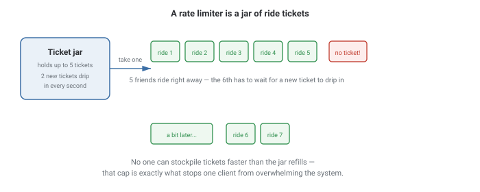
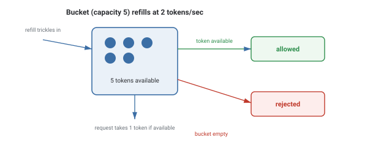
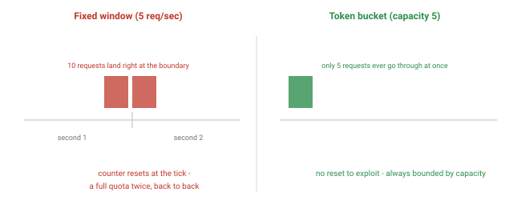

Capstone: Rate Limiter
A worked system design example that pulls together time-based state, per-client isolation, and the kind of trade-off reasoning the rest of this HLD section builds toward.
In Plain English
Think of a jar of ride tickets at an amusement park.

The jar holds a limited number of tickets and refills slowly. If you and your friends grab tickets faster than the jar refills, eventually someone has to wait — that's a request getting rate-limited.
Notice there's no "reset moment" — the jar doesn't suddenly fill back up to 5 at the top of every minute. It trickles continuously, which is exactly why it can't be gamed by timing a burst right at a reset boundary.
Theory & Diagrams
Why this is a good capstone
A rate limiter sits where load balancing (protecting backends from overload), stateful tracking, and time-based algorithms all meet in one small, concrete system — and it's one of the most commonly asked system design questions in its own right.
The token bucket algorithm
A bucket holds up to capacity tokens, refilling continuously at refill_rate tokens per second, capped at capacity. Every request tries to take one token: available means allowed, empty means rejected.

Why refill continuously instead of resetting per second
A naive "N requests per second" counter that resets every second allows a burst of nearly 2N requests right at the boundary between two seconds. A token bucket refills gradually, so burstiness is always bounded by capacity — there's no reset moment to exploit.

Trade-offs
- You want to allow legitimate short bursts (a user clicking rapidly) without letting the rate creep past a hard cap.
- Simplicity matters more than precision and the abuse risk from boundary bursts is acceptable for the use case.
What interviewers are listening for: understanding specifically why a fixed window counter is exploitable at its boundary, and recognizing that a real rate limiter needs per-client state reachable from every server handling that client's requests — not just one in-memory bucket per server.
If you're a fresher: being able to describe how a token bucket refills and rejects requests when empty, in your own words, covers the core of this question.
If you're ~3 years in: be ready to go one level deeper — where the bucket's state actually lives across multiple servers, and what you'd pick (Redis, a local approximation, sticky routing) and why.
Real-World Examples
- Stripe's API rate limits — documented per-endpoint limits using a token-bucket-style algorithm to protect the platform from any single integration.
- AWS API Gateway throttling — configurable burst and steady-state limits per client, modeled directly as a token bucket.
- GitHub API rate limiting — a fixed quota per hour per token, with response headers telling clients how many requests remain and when the quota resets.
- Nginx's
limit_reqmodule — request rate limiting at the web server layer using a leaky-bucket variant.
Interview Questions
Click a question to reveal the answer.
How does a token bucket rate limiter work?
A bucket holds up to a fixed capacity of tokens, refilling continuously at a fixed rate. Each request consumes one token if available; if the bucket is empty, the request is rejected. Burstiness is always bounded by the bucket's capacity.
Why is a fixed window counter exploitable at its boundary?
Because the counter resets abruptly at each tick, a client can send a full quota right before the reset and another full quota right after — nearly double the intended rate in a short window straddling the boundary.
How would you rate-limit per user instead of globally?
Give each user their own bucket, keyed by user ID, API key, or IP. A single shared bucket would let one user's traffic exhaust the budget meant for everyone else.
Where does a rate limiter's state live in a distributed system?
It has to be reachable from every server handling a given client's requests — usually a shared, fast store like Redis, since an in-memory bucket on one server wouldn't know about requests landing on a different server.
What's the difference between token bucket and leaky bucket?
Token bucket allows bursts up to its capacity as long as tokens are available. Leaky bucket enforces a strictly constant output rate regardless of how bursty the input is, smoothing traffic rather than just capping it.
Code & Output
A real token bucket (capacity 5, refill rate 2/sec) hit with a burst of 8 immediate requests, then 3 more after a genuine 1.5 second wait. The allowed/rejected split and the timing of the recovery are both driven by real wall-clock time, not scripted.